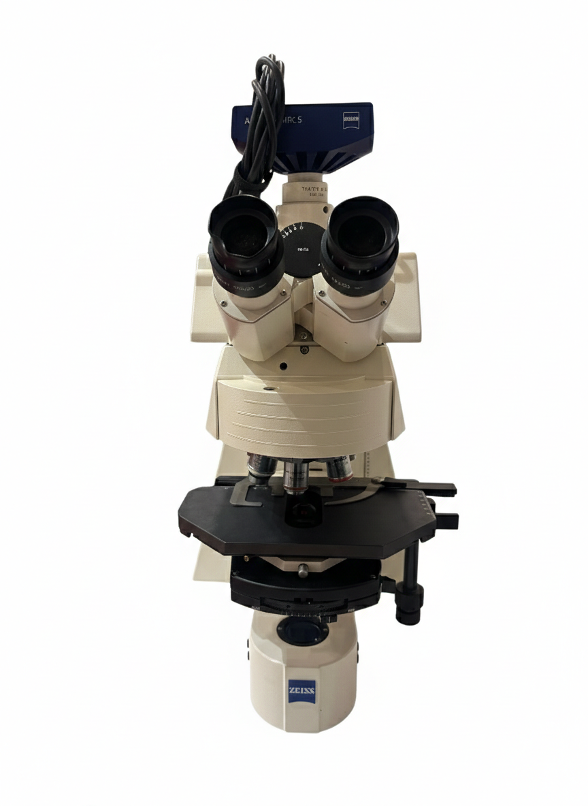

Previous Assignment
Assignment 9:DIC & fluorescence identification
Next Assignment
DIC & fluorescence identification
Identify the requested component on the microscope.
Loading...
Next Step →
Follow the steps to explore the internal parts.
